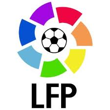

Top Leagues in the World
- La Liga: Spain
- Premiership: England
- Serie A: Italy
- Bundesliga: Germany
- Ligue 1: France

Soccer is one of the most popular sports in Europe and the Americas. It has a vivid and interesting history in the world of sports. Early evidence of soccer being played as a sport finds occurrence in China during the 2nd and 3rd centuries BC. In China, it was during the Han dynasty that people dribbled leather balls by kicking it into a small net. Recorded facts also support the fact that Romans and Greeks used to play ball for fun and frolic. Some facts point to Kyoto in Japan where kicking of ball was a popular sport.
It is said that early growth of the modern soccer started in England. Some amusing facts even mention that the first ball used was the head of some Danish brigand. It is said that during medieval times, the old form of soccer used to allow many ill practices like kicking, punching, biting and gouging. The main aim was to carry the ball to a target spot. People grew so fond of the game that they would throng the field all day long. Sometimes the competition grew fierce and masses got so wild that there were frequent incidents of violence during the game. It is also said that soldiers admired the game so much that they missed archery practice to watch it.
King Edward III banned soccer in 1365 owing to the growing incidents of violence and military indulgence in the sport. In 1424 King James I of Scotland also proclaimed in the Parliament — “Na man play at the Fute-ball” (No man shall play football).
Learn more about the current top five leagues in the world.

